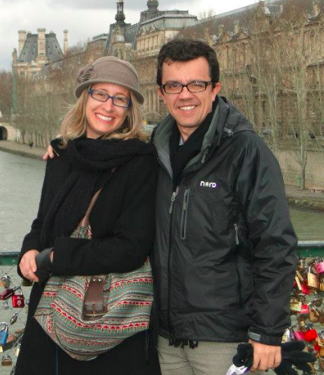
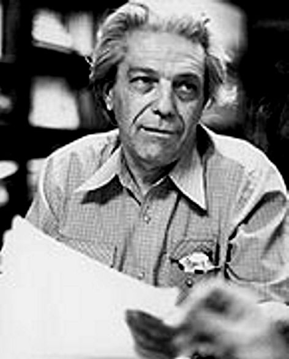
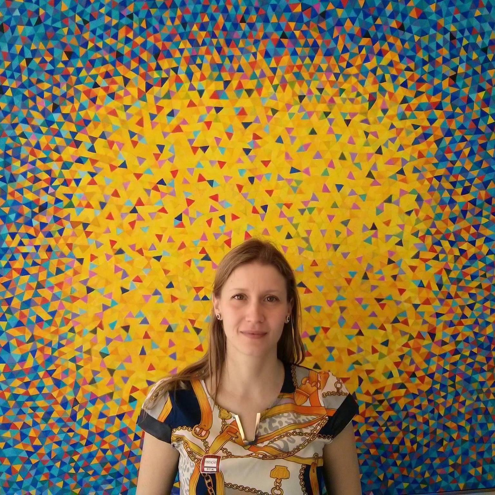
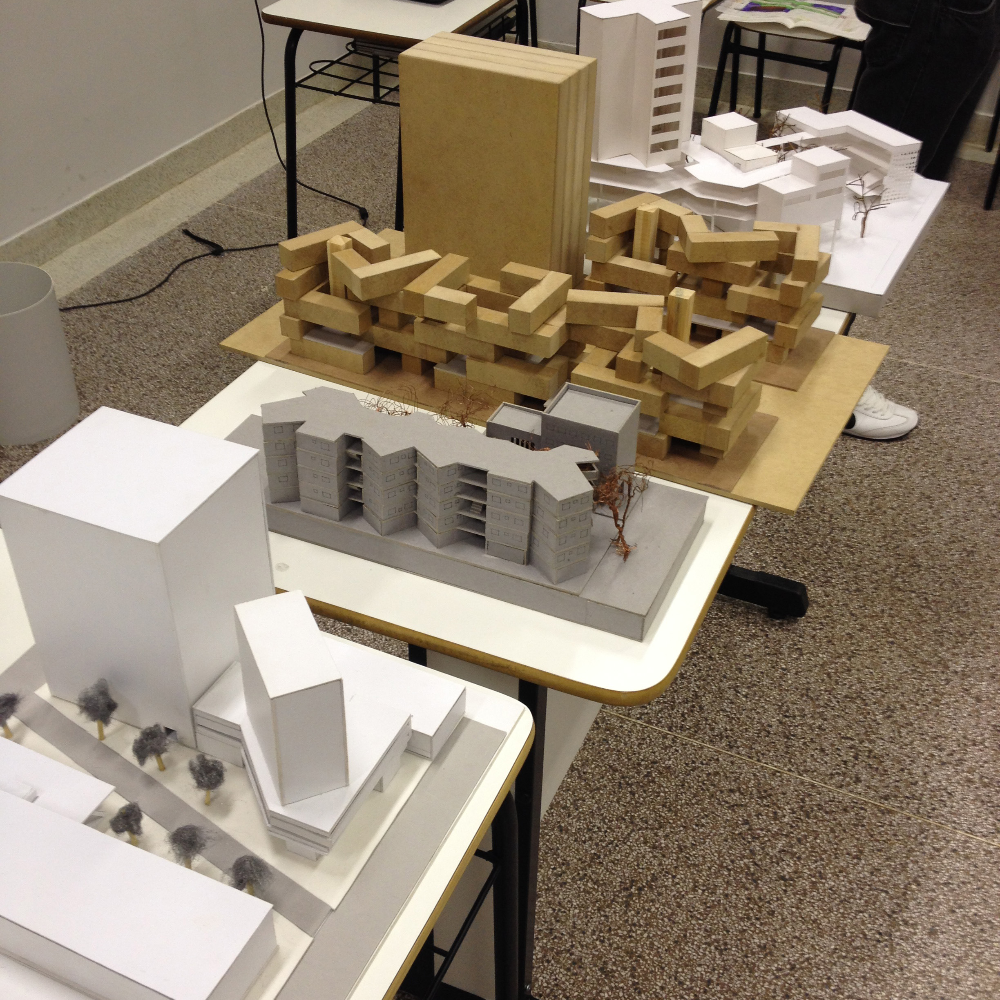

Semana Acadêmica Arquitetura e Urbanismo Uningá
A Semana Acadêmica de Arquitetura e Urbanismo da Faculdade Ingá tem como objetivo estimular a reflexão sobre a produção da Arquitetura e do Urbanismo em um contexto contemporâneo, passando pela temática das políticas de habitação social, atuação profissional do arquiteto e urbanista e revivendo a obra de um dos mais importantes arquitetos brasileiros através da exibição do documentário "Vilanova Artigas: o arquiteto e a luz".
O evento também tem como objetivo complementar a formação acadêmica dos estudantes do curso de Arquiteura e Urbanismo, através dos mini-cursos, oficinas e workshops, que proporcionarão grande contribuição e aperfeiçoamento no domínio de técnicas de representação gráfica.
Por fim, como encerramento da semana, o desafio da charrete busca discutir diversas formas de pensar e fazer Arquitetura e Urbanismo, gerando reflexões e instigando a criatividade para solucionar problemas do cotidiano. Assim, o exercício instigará o aluno a uma reflexão mais profunda sobre os principais tópicos que regem o ensino e a prática da arquitetura e do urbanismo. A fragmentação das práticas de projeto, bem como a natural distancia em que se encontram as disciplinas teóricas necessitam serem extrapoladas eventualmente, para permitir ao acadêmico uma visão da totalidade que é o oficio da arquitetura.
Localização
Faculdade Ingá. Maringá, Paraná
Palestras
-

27/10 - 19h00 A política Habitacional recente em Maringá.
Beatriz Fleury e Ricardo Silva - www.dau.uem.br
Beatriz Fleury e Ricardo Silva são professores do departamento de arquitetura e urbanismo da Universidade Estadual de Maringá e apresentam pesquisa sobre a política habitacional recente e os impactos sócio ambientais no aglomerado metropolitano Sarandi – Maringá – Paiçandu.
-
28/10 - 19h00 Trajetória e obra em 10 anos
GrupoPR - www.grupopr.arq.br
O grupo pr arquitetura iniciou suas atividades em 2005 na cidade de Maringá - PR com a postura de realizar um trabalho integrado e coletivo nas áreas de projeto arquitetônico e projeto arquitetônico de interiores. Integrado porque considera desde os sistemas construtivos, até o acabamento e mobiliário. Coletivo porque reúne diversos integrantes e parceiros, cada um colaborando com a sua potencialidade.
-

29/10 - 19h30 VILANOVA ARTIGAS 100
VILANOVA ARTIGAS 100 - CAU/PR e IAB-PR
O documentário "Vilanova Artigas: o arquiteto e a luz" remonta a trajetória do icônico arquiteto brasileiro João Batista Vilanova Artigas. Por meio das lembranças de familiares, amigos, alunos, imagens de arquivo e visitas a seis de suas principais obras, a história de vida de Artigas é contada. Escrito e dirigido por Laura Artigas, neta do arquiteto, o filme tem codireção de Pedro Gorski e produção de Gal Buitoni e Luiz Ferraz, da Olé Produções.
Agenda
Confira aqui a programação para a Semana de Arquitetura Uningá 2015.
| Data | Horário | Atividade | Descrição |
|---|---|---|---|
| 27/10 | 19h00 | A política Habitacional recente em Maringá. UEM | A política Habitacional recente e os impactos socioambientais aglomerado metropolitano Sarandi-Maringá-Paiçandu |
| 28/10 | 19h00 | Trajetória e obra em 10 anos GrupoPR | Os arquitetos João Vitor e Rodrigo Pupin formam com seus colaboradores o escritório GRUPOPR e apresentam sua trajetória e obra em 10 anos de atuação profissional |
| 29/10 | 19h30 | VILANOVA ARTIGAS 100 Teatro Regional Calil Haddad | O IAB-PR Núcleo Maringá , com apoio da Secretaria de Cultura da PMM, do CAU/PR e do IAB-PR, convida Arquitetos e estudantes para celebrar o centenário de Vilanova Artigas (1915-1985). A memória de um dos mais importantes arquitetos brasileiros será lembrada através da exibição do documentário "Vilanova Artigas: o arquiteto e a luz". Serão lançados ainda os livros "À mão livre do vovô", com desenhos do arquiteto, e "Vilanova Artigas", de autoria de Rosa Artigas. |
Workshops
-

Oficina de criação e composição com Doodle
Rosana Bacicheti - www.uem.br
Doodle é uma palavra inglesa para referir um tipo de esboço ou desenho realizado quando uma pessoa está distraída ou ocupada. A palavra portuguesa é "rabisco". São desenhos simples que podem ter significado concreto de representação ou simplesmente representar formas abstratas.
-
Diagramação de Pranchas em Corel Draw - Parte I
Gleison Gerola - www.faculdadeinga.com.br
A expressão gráfica computacional está presente cada vez mais em escritórios de design, arquitetura e engenharia modernos, por se tratar de uma ferramenta que otimiza e facilita a compreensão gráfica de projetos e produtos. Assim, o curso será um complemento ao conteúdo curricular do curso de Arquitetura e Urbanismo, com o objetivo de auxiliar em uma melhor qualidade de apresentação de trabalhos acadêmicos.
-
Sketchup - Ferramentas de velocidade
Oráculo Cursos - www.oraculocursos.com.br
Sketchup é uma ferramenta fantástica onde você desenvolve projetos 3D com grande facilidade certo? NEM SEMPRE! Você precisa saber quais os plug-ins adequados para não sofrer na modelagem de escadas, telhados e formas orgânicas, o curso de Sketchup avançado é para você que já sabe utilizar o programa mas que ir além desse nível. Aulas com tira-dúvidas, novos plug-ins, e o melhor que o Sketchup tem para oferecer.
Semana de Arquitetura Uningá 2015.
| Data | Horário | Local | Atividade | Descrição |
|---|---|---|---|---|
| 27/10 | 08h00 | Lab. 15 | Oficina de criação e composição com Doodle UEM | Materiais: Caneta retroprojetor ou nanquim ponta fina e grossa; Caneta hidrocor ou lápis aquarelado; Esquadro pequeno, regua e tesoura. |
| 27/10 | 14h00 | Lab. 15 | Diagramação de Pranchas em Corel Draw - Parte I Faculdade Ingá | Materiais: Notebook, incluindo mouse e carregador de bateria. O programa do Corel Draw deverá estar instalado. |
| 28/10 | 08h00 | Lab. 15 | Sketchup - Ferramentas de velocidade Oráculo Cursos | Materiais: Notebook, incluindo mouse e carregador de bateria. O programa do Sketchup deverá estar instalado. |
| 28/10 | 14h00 | Lab. 15 | Diagramação de Pranchas em Corel Draw - Parte II | Materiais: Notebook, incluindo mouse e carregador de bateria. O programa do Corel Draw deverá estar instalado. |
| 29/10 | 08h00 | Lab. 15 | Diagramação de Pranchas em Corel Draw - Parte I | Materiais: Notebook, incluindo mouse e carregador de bateria. O programa do Corel Draw deverá estar instalado. |
| 30/10 | 08h00 | Lab. 15 | Diagramação de Pranchas em Corel Draw - Parte II | Materiais: Notebook, incluindo mouse e carregador de bateria. O programa do Corel Draw deverá estar instalado. |
Charrete
-

30/10 - 19h00 II Charrete Arquitetura e Urbanismo
A origem do termo é controversa e múltipla. A versão mais conhecida vem da França, da Escola de Belas Artes de Paris, onde havia uma tradição que compreendia em dar aos estudantes uma tarefa de projeto em um tempo extremamente curto. Concluído o exercício, uma charrette passava pelas ruas, recolhendo os projetos. Na década de 80, o termo foi resgatado por urbanistas norte-americanos como uma nova forma colaborativa de planejamento da cidade e hoje se tornou mais uma importante ferramenta de elaboração de projetos.